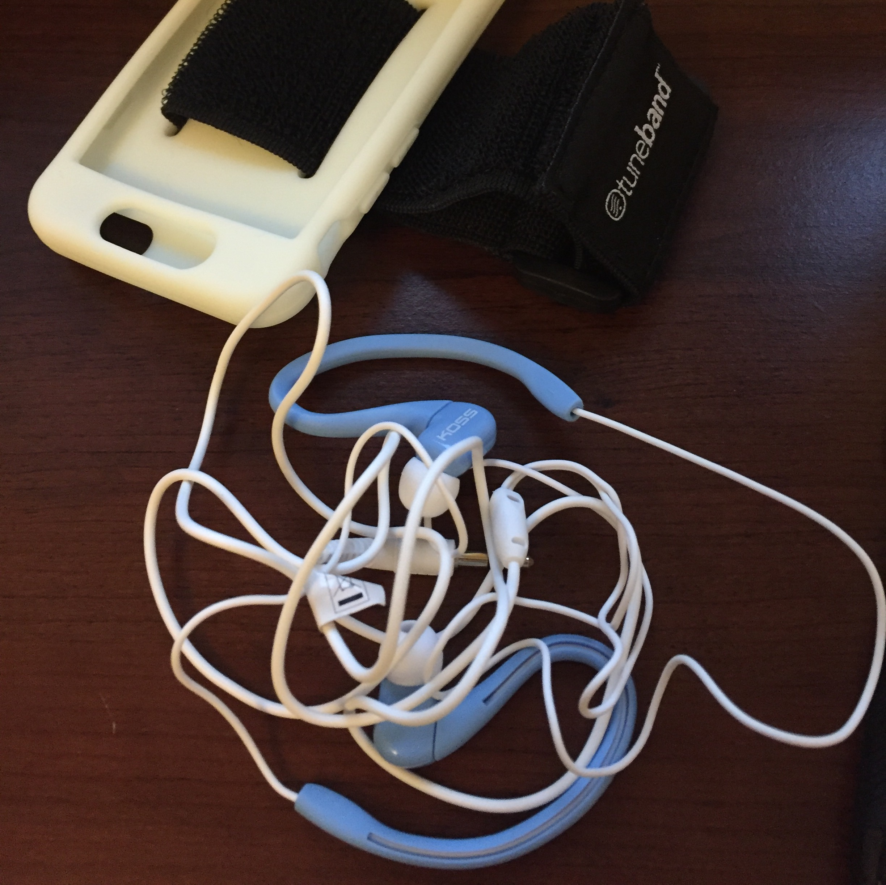

Listened to: This American Life
See how the map of the run has a part with a dotted line? I think the app totally missed a portion of time when I was running and subsequently thought my pace was faster. My muscles, especially my shins were hurting -- maybe because my run yesterday felt really great and I went for longer? I had to keep stopping and stretching, and I ended early and did some planks. At least my new running swag came today! I'm in deep :o

Home Prev